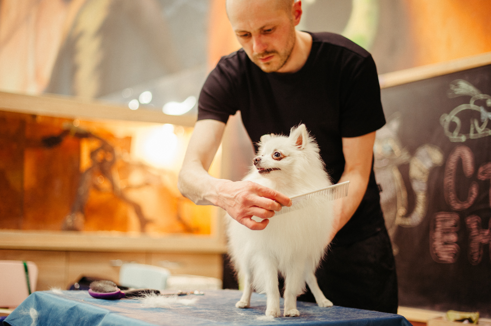

Basic Dog Grooming: 5 Important Canine Needs
Dog grooming is one of your dog's basic needs and an important part of dog ownership. Just like people, dogs need physical maintenance to look and feel their best. Fortunately, dogs do not need to bathe as often as people, but you do need to learn how much grooming your dog actually needs and keep it on a schedule. Generally, a dog’s grooming needs depend on the breed and hair type. If your dog has a skin, ear or nail condition, follow your veterinarian’s instructions regarding grooming your dog. It is also important to use the appropriate grooming tools.
1. Hair Brushing
- Long-haired dogs usually require daily brushing to prevent matting and tangling of hair.
- Medium-haired dogs may be prone to matting and tangles and should be brushed at least weekly.
- Short-haired dogs can typically go a few weeks in-between brushing.
2. Nail Trimming
3. Bathing
4. Ear Care
5. Haircuts
Most dogs enjoy being brushed – regularly brushing them will strengthen your bond with your dog while helping them maintain a healthy coat. A dog’s brushing needs depend on their hair type. Choose the right brush and follow these minimum guidelines:
Nail trims are often hated by dogs and owners alike. Most dogs dislike even having their paws handled and know how much it hurts when nails are cut too short. Dog owners are often uncomfortable with the process for fear of hurting their dogs.
Dogs will develop an aversion to nail trimming once they experience pain from it. The best way to avoid this is to learn how to trim nails correctly and exercise caution. Ideally, a veterinary technician, vet or groomer should teach you how to trim your dog's nails. Most dogs need monthly nail trims, but your dog may need more or less depending on the rate of growth.
An alternative to nail trimming is the use of a rotary tool to file down nails. Consider the Pedicure Grooming Tool for this task.
Bath time does not mean fun to most dogs and owners. It may bring forth an image of a wet dog running from the tub, dripping all over the house. Bathing does not have to be this way if your dog can get used to it. He may not like the bath, but he’ll be easier to manage. Learn how to bathe your dog properly and make the experience as positive as you can for you and your dog.

Most dogs only need to be bathed when they seem dirty or itchy. Many people like to bathe their dogs monthly, but bathing as often as once a week is not considered harmful. Always use a soap-free shampoo that is intended for dogs. Depending on the condition of your dog’s skin and coat, your veterinarian may recommend a specific shampoo. In this case, be sure to follow your veterinarian’s instructions about bathing.
Your dog's ears can be a haven for bacteria and yeast if not kept clean. Some dogs can go their whole lives without ear problems, and the only routine ear cleaning needed is during the monthly bath. Other dogs have chronic ear disease and require multiple cleanings a day.
Ear problems can often be traced back to genetics. Dogs with floppy ears or long hair tend to be predisposed to ear problems because the ear canal simply does not have as much air exposure. Many ear problems are a sign of allergies. If your dog has excess debris or foul odor in his ears, your veterinarian will likely prescribe special ear cleaners and medications. If your dog's ears are relatively healthy, you can help keep them that way with proper ear care.
Dogs with continuously growing hair, such as the Poodle or Shih Tzu, typically need their hair cut every 2-4 weeks depending on the breed of the dog and the style of the cut. This task is often best left to professional groomers, though many dog owners are able to learn some basic maintenance haircuts. If you are interested in learning professional dog grooming skills, consider dog grooming school.